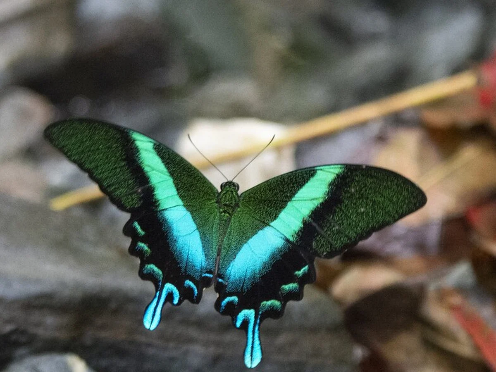
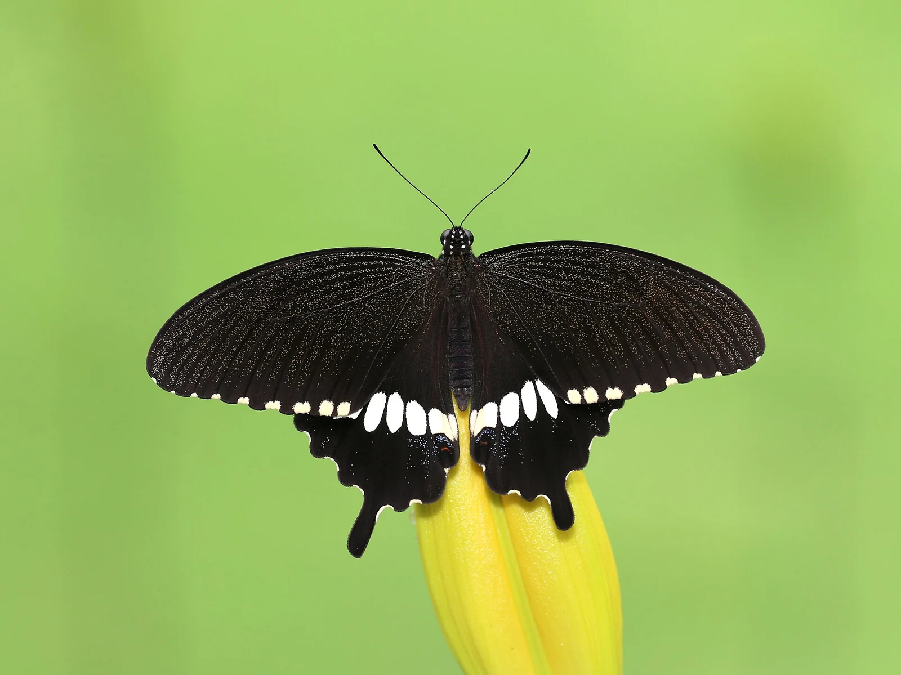
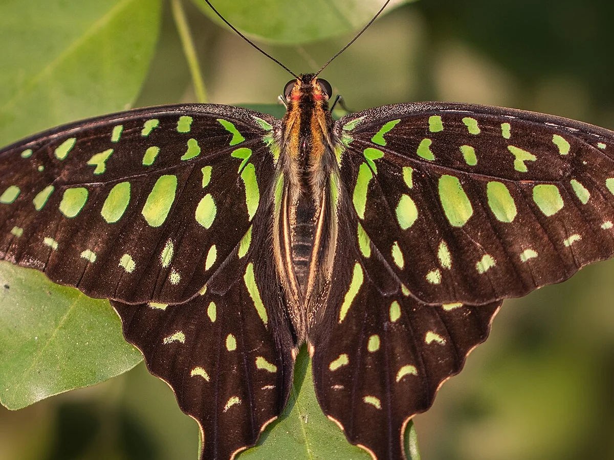
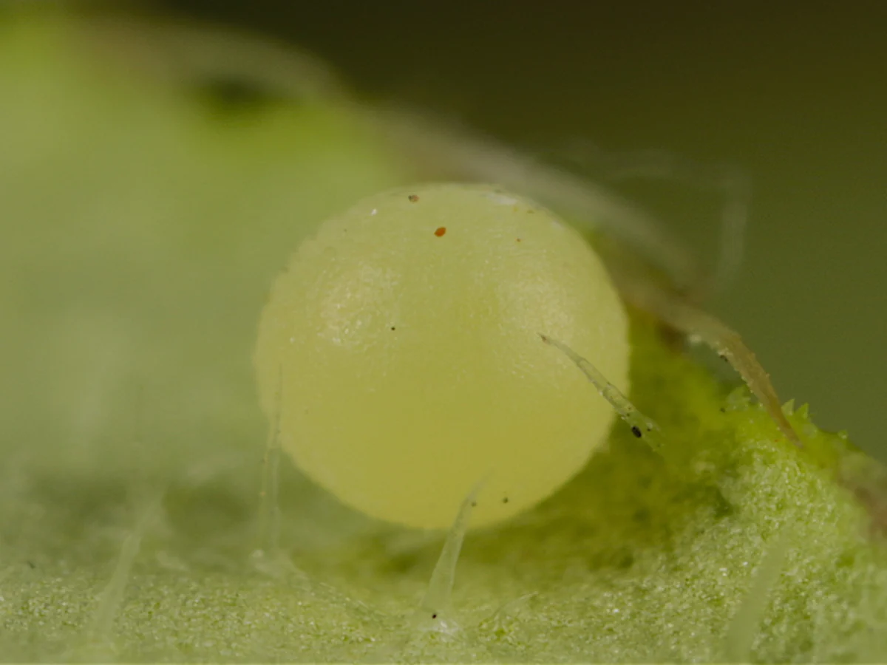
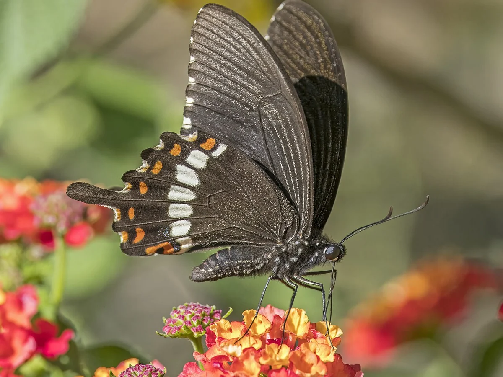

01
Papilio blumei
Kupu-kupu sayap hijau metalik dari Sulawesi. Warnanya bukan pigmen, melainkan pantulan cahaya pada struktur sisik.
Inang larva: jeruk dan kerabat Rutaceae
Kupu-kupu bukan hiasan taman. Ia penanda apakah lingkungan kita masih layak dihuni. Siklus hidupnya bisa kita baca seperti kalender musim.
Satu organisme, seluruh sistem

Vitrin 02 · Biodiversitas
Biodiversitas adalah keragaman kehidupan pada semua tingkatnya: variasi gen di dalam satu populasi, jumlah jenis di suatu tempat, dan ragam ekosistem tempat mereka hidup.
Ketiganya saling menopang. Satu populasi kupu-kupu yang masih beragam secara genetik lebih mampu bertahan saat musim berubah. Keragaman itu hanya terjaga kalau tumbuhan inangnya masih ada. Tumbuhan itu hanya bertahan kalau ekosistemnya tidak terpotong-potong.
Karena itu, ketika kupu-kupu menghilang dari sebuah gang, yang sebenarnya kita kehilangan adalah satu simpul dari jaring. Simpul yang hilang menarik simpul lain bersamanya.
Hubungan yang berjalan setiap hari
Vitrin 03 · Mengenal kupu-kupu
Kupu-kupu adalah serangga bersisik: warna sayapnya berasal dari ribuan sisik mikroskopis, bukan pigmen semata. Bentuk tubuhnya menjelaskan cara hidupnya.

1 2 3 4 5 6 7 8Tiga spesies yang dapat dijumpai di Indonesia

01
Kupu-kupu sayap hijau metalik dari Sulawesi. Warnanya bukan pigmen, melainkan pantulan cahaya pada struktur sisik.
Inang larva: jeruk dan kerabat Rutaceae

02
Kupu-kupu raja, salah satu yang terbesar di kawasan ini. Terbang tinggi di tajuk, turun untuk mencari nektar.
Inang larva: Aristolochia

03
Yang paling sering terlihat di kota. Terbang cepat dan berhenti sebentar di bunga pagar, taman kantor, dan pot di teras.
Inang larva: sirsak, kenanga, dan kerabat Annonaceae
Catatan: kebutuhan inang berbeda antarspesies dan antardaerah. Catatan tanaman inang di sini bersifat umum, bukan resep tanam untuk setiap lokasi.
Siklus hidup · pilih tahap

Tahap 01
Betina meletakkan telur satu per satu di daun inang yang tepat, bukan di sembarang tanaman. Permukaannya berlapis lilin, dan bentuknya sering menyerupai kuncup atau kotoran burung. Dalam beberapa hari, cangkang itu menghitam: tanda ulat siap keluar.

Tahap 02
Ini tahap paling rakus dan paling rentan. Ulat makan daun inang hampir tanpa henti, berganti kulit beberapa kali. Setiap kali kulit lama tanggal, tubuhnya bertambah besar. Di sini juga ia paling mudah dimangsa burung, semut, dan tawon parasit.

Tahap 03
Tubuh mengeras dan menggantung, diikat benang sutra. Dari luar ia tampak diam, tetapi di dalam seluruh tubuh larva dibongkar dan disusun ulang. Warnanya meniru daun atau ranting di sekitarnya. Kamuflase itu hanya bekerja jika lingkungannya tidak dibersihkan habis.

Tahap 04
Sayapnya terbuka, dan tugasnya berubah: mencari nektar, menghindari pemangsa, dan menemukan pasangan. Saat berpindah dari bunga ke bunga, ia membawa serbuk sari: jasa penyerbukan yang berlangsung tanpa upah dan tanpa catatan.
Vitrin 04 · Rumah kupu-kupu
Kupu-kupu membutuhkan empat hal yang jarang ada bersamaan: daun untuk larvanya, bunga untuk dirinya, tempat berlindung, dan jalur aman untuk berpindah di antara ketiganya.
Semua lapisan aktif. Matikan satu lapisan untuk melihat apa yang hilang dari halaman ini.
Halaman ini fiktif tetapi berukuran wajar: sekitar 6 × 5 meter. Tidak ada bagian yang rumit. Yang perlu hanya tata letak yang mempertemukan kebutuhan larva dan kebutuhan imago dalam satu ruang.
| Tanaman | Dipakai oleh | Yang dicari | Akibat jika hilang |
|---|---|---|---|
| Inang jeruk, Aristolochia |
Ulat | Daun, sebagai makanan | Tidak ada tempat bertelur; generasi berikutnya tidak ada |
| Nektar Lantana, Ixora, Asystasia |
Kupu-kupu dewasa | Gula, sebagai bahan bakar | Kupu-kupu ada, tetapi tidak cukup energi untuk kawin |
Menanam bunga saja tidak menambah populasi; menanam inang tanpa bunga membuat imago kelaparan. Keduanya harus ada dalam jarak terbang yang wajar.
Vitrin 05 · Ancaman
Tekanan terhadap kupu-kupu jarang datang dari satu sebab. Biasanya beberapa perubahan kecil bertumpuk di ruang yang sama.
Sebelum
Lima petak, satu jaringan. Populasi dapat bertukar individu dan gen.
Sesudah
Petak terisolasi. Dua hilang; yang tersisa tidak lagi terhubung.
Vitrin 06 · Kuis
Kuis ini menguji hal-hal yang sering tertukar: inang dan nektar, telur dan kepompong, sebab dan akibat.
Setiap jawaban langsung diberi penjelasan, benar atau salah. Skor muncul di akhir.
Vitrin 07 · Ambil tindakan
Tidak satu pun dari ini memerlukan lahan luas, izin, atau uang banyak. Beberapa justru berarti melakukan lebih sedikit.